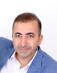
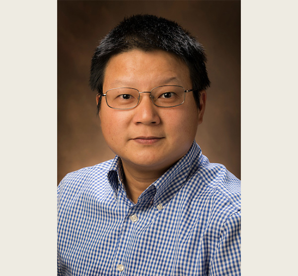

The SIGHT Team
A multidisciplinary team across business analytics, engineering, and human factors

Fadel Megahed, PhD
Principal Investigator
Raymond E. Glos Professor · ISA · Farmer School of Business · Miami
AI applications in occupational safety; statistical learning; quality & reliability.
PI
Arthur Carvalho, PhD
Co-Principal Investigator
Paliwal Innovation Chair · ISA · Farmer School of Business · Miami
Generative AI, decision analysis, and blockchain.
Co-PI

Mohammad Mayyas, PhD
Co-Principal Investigator
Chair & Professor · Engineering Technology · Miami
Advanced manufacturing, automation, robotics, and material handling.
Co-PI

Jay Shan, PhD
Co-Principal Investigator
Associate Professor · ISA · Farmer School of Business · Miami
Data management and applied AI in business.
Co-PI

Ibrahim Yousif, PhD
Postdoctoral Researcher
Engineering Technology · Miami
Computer vision, autonomous manufacturing, real-time digital twins.
Postdoc
Lora Cavuoto, PhD
Collaborator
Professor · Industrial & Systems Engineering · University at Buffalo (SUNY)
Wearable sensors, surgical ergonomics, fatigue and exposure assessment.
UB
Assembled around SIGHT — Safety Immersion & Gamified Hazard Training for Industry 5.0, a $1.5M Ohio BWC award.
Live Demo — SIGHT VR Training Platform
SIGHT real-time digital twin — led by Dr. Ibrahim Yousif
Other Projects · 1–3
Applied AI in Production at Miami.
Three faculty-built, student-facing AI tools running today at the Farmer School of Business. Demonstrating that our team can take research prototypes all the way to deployed software used by hundreds of students each semester.
Live Demo · 1 of 3 — ChatISA (multi-model classroom AI assistant)
Live Demo · 2 of 3 — Chat FSB Advising (RAG over advising knowledge base)
Live Demo · 3 of 3 — ISACareerBridge (AI-supported job & internship matching)
Under Review · Proposal
CURE — Cognitive Twin
for Paint-Shop Energy.
A physics-informed AI proposal under review at the DOE Genesis Mission with Yamaha Motor Manufacturing, the University of Georgia, and Savannah River National Lab. Same digital-twin spine as SIGHT — new objectives: energy, quality, reliability.